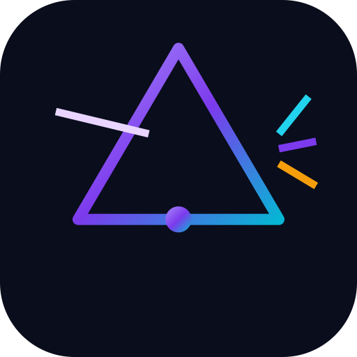

One app.
Two kinds of light.
Helioprism moves a file between two devices using only a screen and a camera — no network, no cables, no pairing. It carries the same rateless frame stream over two transports and picks the right one for the job.

The two transports
| QR | SpectraCode | |
|---|---|---|
| Physical layer | monochrome QR modules | 36-colour cells, 5 bits each |
| Per frame | ~1.4 KB | ~5.1 KB |
| Best for | small files, cheap optics, any scanner | larger files |
Both carry the same frame format and the same rateless fountain stream, so a missed frame costs one more symbol rather than a whole loop. The magic byte in each frame says which layer carried it, so the receiver auto-detects.
How it works
files ─▶ container ─▶ fountain symbols ─▶ frames ─▶ QR or colour matrix
│
files ◀─ container ◀─ collector ◀─ frame ◀─ camera ─┘
Selection engine
Auto-picks QR for small payloads and the colour transport for large ones — or you choose.
Plain QR mode
A small text file can go out as one plain QR that any third-party scanner reads.
Installable PWA
After the first load the app never touches the network.
Free for people, licensed for business
Helioprism is free for personal, academic, hobby and non-profit use under the PolyForm Noncommercial License 1.0.0. Commercial use needs a paid licence, issued by invoice on request.
Download
Android APK · 674 KBWindows EXE · 8.5 MBLinux · 20.8 MB
From the latest release · free · no account, no telemetry.